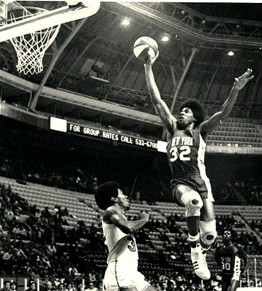

Histoire des Nets Brooklyn
Les Nets de Brooklyn (Brooklyn Nets, « les filets de Brooklyn » en anglais) sont une franchise de basket-ball de la National Basketball Association (NBA). L'équipe est basée dans l'arrondissement de Brooklyn à New York. Les Nets concourent au sein de la NBA en tant que membre de la Division Atlantique de la Conférence Est. L’équipe joue ses matchs à domicile au Barclays Center. Il s’agit de l’une des deux équipes de la NBA situées à New York, l’autre étant les Knicks de New York. L’équipe a été créée en 1967 comme une franchise de la ligue rivale de la NBA, l’American Basketball Association (ABA). Ils ont joué dans le New Jersey en tant qu’Americans du New Jersey pendant leur première saison, avant de déménager à Long Island, en 1968 et de changer leur nom pour les Nets de New York. Pendant ce temps, les Nets remportent deux titres ABA (en 1974 et 1976). En 1976, l’ABA a fusionné avec la NBA, et les Nets ont été absorbés dans la NBA avec trois autres équipes ABA (les Spurs de San Antonio, Pacers de l'Indiana, et Nuggets de Denver), toujours présentes à ce jour dans la ligue. En 1977, l’équipe est retournée dans le New Jersey et a joué sous le nom des Nets du New Jersey de 1977 à 2012. Pendant cette période, les Nets remportent deux championnats consécutifs de conférence Est en 2002 et 2003, mais ne remportent pas de titre NBA. À l’été 2012, l’équipe a déménagé au Barclays Center et a pris son nom géographique actuel. Les Nets déménagent pour Brooklyn (New York) le 30 avril 2012. La franchise joue dans la toute nouvelle salle du Barclays Center. Le propriétaire de la franchise, Mikhail Prokhorov, a affirmé que l'équipe changerait son nom une fois installée à Brooklyn2. Le rappeur Jay-Z, qui est également actionnaire minoritaire, annonce que la franchise s’appelle les Nets de Brooklyn. Le quartier de Brooklyn retrouve une équipe de sport professionnel après le départ de l'équipe de baseball des Dodgers de Brooklyn en 1957. Avec le retour de la franchise à New York, la « grosse pomme » et Los Angeles sont les deux seules villes à avoir deux équipes NBA. Pour marquer leur retour, les Nets changent d'identité visuelle, avec un nouveau logo et de nouvelles couleurs. Le 11 juillet 2012, la franchise transfère Jordan Farmar, Johan Petro, Anthony Morrow, Jordan Williams, DeShawn Stevenson et un tour de draft vers les Hawks d'Atlanta pour acquérir Joe Johnson, 6 fois All Star. A la même date, Deron Williams va signer un énorme contrat sur 5 ans, à hauteur de 98,7 millions de dollars. En plus de cela, les Nets vont re-signer Brook Lopez et Gerald Wallace avec des contrats de 4 ans. Le 12 juillet 2013, les Nets et les Celtics officialisent un échange XXL qui envoie Kevin Garnett, Jason Terry et Paul Pierce en direction de Brooklyn contre Gerald Wallace, Kris Humphries, MarShon Brooks, Kris Joseph, Keith Bogans et trois premiers tours de draft (2014, 2016 et 2018)4. L'objectif de cet échange est de constituer un 5-majeur avec Deron Williams, Joe Johnson, Paul Pierce, Kevin Garnett et Brook Lopez, formant une nouvelle "superteam". Les signatures d'Alan Anderson, Shaun Livingston, Andreï Kirilenko et Mason Plumlee sont enregistrées avant de commencer la saison. Tout cela va porter leur salary cap à 102 millions de dollars (total le plus élevé de la ligue sur cette saison). Le total des taxes pour le dépassement du plafond salarial est de 86 millions de dollars.

